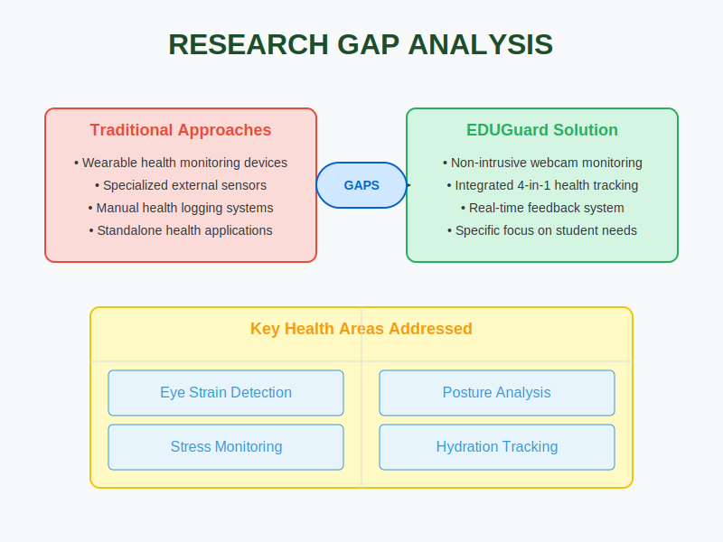

1. Literature Review
The global transformation in education has ushered in a new era where learning can happen anywhere, anytime. With this rise in remote learning and online education platforms, millions of students have gained flexibility and accessibility never imagined before. But with this convenience comes a set of less visible, yet deeply impactful challenges those affecting the physical and mental health of learners.
Extended screen time, poor sitting habits, and the lack of structured breaks have led to a range of health issues, from eye strain and fatigue to mental burnout and musculoskeletal discomfort. Students are silently enduring the physical toll of this digital shift. The need of the hour is not just digital literacy, but digital wellness. This is where EduGuard steps into an intelligent system designed to bridge the gap between learning and well-being.
EduGuard is an innovative health-monitoring system crafted specifically for the online learning community. It is not merely a tool, but a wellness companion that works silently in the background to ensure that students stay healthy while they study. Our mission is simple but powerful: to enable safe, healthy, and effective digital learning by integrating real-time health insights into daily study routines.
What makes EduGuard unique is its non-intrusive and webcam-based design. It doesn't rely on wearables or external devices. Instead, using the power of computer vision and machine learning, it detects key health issues and proactively nudges users to adopt better habits.
The system targets four critical health areas: eye strain (Computer Vision Syndrome), stress, dehydration, and poor posture all of which are prevalent among digital learners today. Our research began with a simple yet far-reaching question: How can we protect the physical and mental health of students who spend long hours in front of screens? From eye discomfort and mental exhaustion to dry lips and back pain, students often ignore these symptoms until they evolve into chronic conditions.
Traditional health monitoring techniques are reactive, not proactive. Furthermore, wearable health devices are costly and often impractical for student populations. The gap was clear: the world needed a smart, accessible, and affordable health support system tailored for the digital learning experience and EduGuard is the answer to that gap.
Eye Strain Detection
Eyes are one of the most affected organs in a digital learning environment. EduGuard's first module focuses on detecting Computer Vision Syndrome (CVS)—a modern epidemic caused by prolonged screen exposure.
This module monitors:
- Blinking frequency
- Eye fatigue
- Face-to-screen distance
- Screen time
Using real-time webcam feeds and a trained eye-state detection model, the system identifies early signs of eye strain and notifies the user to take a break or adjust posture. It also compiles personalized reports to promote long-term eye health. By providing timely feedback, this module encourages micro-behavioural changes that prevent the escalation of eye-related issues.
Stress Monitoring
Academic stress is often overlooked until it reaches a tipping point. The stress detection module of EduGuard leverages facial expression recognition to identify signs of emotional strain without requiring any sensors or manual inputs.
Trained on datasets with 7 core emotional states (happy, sad, angry, fear, surprise, disgust, neutral), and built on EfficientNetB0, this model classifies the user's emotional state in real-time. If stress indicators are high, EduGuard issues gentle prompts reminders to breathe, stretch, or take short breaks.
Moreover, all data is processed privately and securely, ensuring both mental wellness and digital privacy. This module transforms passive stress into active well-being.
Hydration Detection
Hydration often slips under the radar during intensive screen sessions. Our third module addresses this through a novel approach lip dryness detection. By analysing subtle changes in lip texture and mouth behaviour, this module identifies signs of dehydration.
The system then provides hydration prompts like drinking water or using lip balm. It also tracks screen time to correlate dehydration risk with session duration. Unlike traditional hydration reminders, EduGuard uses contextual and evidence-based cues, ensuring that alerts are timely, relevant, and personalized.
Posture Detection
A poor sitting posture can cause long-term spinal issues and chronic pain. The posture detection module in EduGuard acts like a virtual physiotherapist. Using webcam-based vision models trained to recognize body posture, the system classifies user alignment as "good" or "poor." It also distinguishes between short-term slouches and prolonged postural issues, alerting the user only when necessary.
This module promotes physical awareness and corrects behaviour without being disruptive. It's built with adaptability in mind—designed to work in diverse settings like home, library, or shared spaces, and optimized for student comfort and long-term use.
Mobile Integration
To maximize accessibility, EduGuard isn't just a desktop application—it comes with mobile app integration.
- Users can receive real-time alerts on their phones.
- Weekly health summaries and trends help track long-term progress.
- Insights and recommendations can be customized based on learning habits.
The mobile sync bridges the gap between awareness and action. Whether the student is actively studying or reviewing their day, they're never disconnected from their wellness data. The interface is intuitive, data-friendly, and respects user privacy at every level.
EduGuard is more than a project—it's a step toward redefining what it means to learn healthily in the 21st century. By combining real-time computer vision, artificial intelligence, and user-centered design, we're making self-care as easy as studying online. The project is designed to be scalable, adaptable, and affordable ensuring that every student, regardless of background, can benefit from better health support.
In the long term, EduGuard aims to evolve into a full-fledged digital wellness assistant, with capabilities for posture gamification, hydration goals, emotional journaling, and beyond. The journey has just begun but the destination is clear: a world where health and education go hand in hand.
2. Research Problem
How can we maintain our physical and mental health while studying for extended periods in front of computers? The challenges of monitoring students' health in real-time without the use of wearable devices.
Students in online learning environments face several key health challenges:
- Extended screen time leading to Computer Vision Syndrome (CVS)
- Poor posture causing musculoskeletal issues
- Psychological stress due to academic pressure
- Insufficient hydration during long study sessions
These issues are often undetected until they begin to seriously impact both academic performance and overall wellbeing. Traditional solutions like wearable devices are either too expensive, intrusive, or impractical for continuous student use.
The research problem addresses the need for a non-intrusive, affordable, and effective solution that can leverage existing technology (standard webcams) to monitor and improve student health during online learning sessions.
3. Objectives
3.1 Main Objective
- To design and develop EDUGuard, an intelligent, real-time health monitoring system that detects physical and mental health risks among online learners using only a standard webcam, without the need for wearable devices or external sensors.
3.2 Sub Objectives
Detect Eye Strain via Blink Rate and Screen Distance
With students spending hours in front of screens, eye strain becomes a daily issue often leading to headaches, blurry vision, and fatigue. This component focuses on preventing Computer Vision Syndrome (CVS) by monitoring eye blinking patterns and how close students sit to their screens.
Monitor and Analyze Stress Levels through Facial Expressions
Academic pressure often manifests as stress, which can impair cognitive function and learning ability. Using facial expression analysis, EDUGuard aims to detect early signs of stress and provide timely interventions.
Detect Dehydration through Lip Analysis
Prolonged focus on studying often leads students to forget basic hydration needs. This objective involves developing a novel approach to detect signs of dehydration through lip texture and moisture analysis.
Implement Posture Detection and Correction
Poor sitting posture during long study sessions can lead to long-term musculoskeletal problems. The system aims to monitor and provide real-time feedback on posture to prevent these issues.
Create Cross-Platform Integration
To ensure maximum accessibility and usefulness, EDUGuard will be developed with both desktop and mobile components, allowing seamless health monitoring across devices.
4. Methodology
The development of the EDUGuard Desktop Application followed a structured and modular approach, aimed at creating a smart, health-focused monitoring system for desktop users, especially students engaged in prolonged digital learning. The system integrates several independent monitoring modules such as posture detection, hydration tracking, stress monitoring, and eye strain analysis (CVS), each powered by machine learning (ML) and deep learning models.
The frontend of the application was built using C# with WPF to provide an interactive and user-friendly interface. This interface manages user sessions, displays health alerts, shows historical predictions in graphical form, and allows real-time control of monitoring models. The backend components were developed using Python, leveraging specialized ML/DL models trained for specific tasks.
For example, the posture and hydration modules utilize MediaPipe and OpenCV for landmark detection and visual analysis, while models like SVM and Naïve Bayes are used for classification tasks such as stress and eye strain detection.
A core feature of the methodology was the use of TCP socket communication between the desktop app and the Python backend. A local socket server streams webcam frames from the desktop to the model scripts in real time. Each model processes these frames and returns insights, such as posture quality, lip dryness, or blink rate on the fly. MongoDB was used as the primary storage solution to save prediction results under progress report entries, allowing for historical tracking and report generation.
To help users visualize their well-being patterns, the application includes integrated charts for each module, which display trends over time using real-time and historical data. These visualizations allow users to easily spot issues like frequent bad posture, high stress levels, or inconsistent hydration.
Timers in the C# application were configured to regularly fetch the most recent predictions from the database and analyse them. If any of the monitored conditions exceeded predefined health risk thresholds (e.g., consistent bad posture or abnormal blinking), a notification was triggered to alert the user immediately. Each model ran independently and could be started or stopped based on the user's need, enabling modular deployment.
5. Research Gap
Our analysis of existing research identified several critical gaps that EDUGuard addresses:
The research gap analysis clearly demonstrates that while some previous solutions have attempted to address individual aspects of health monitoring for online students, none have provided a comprehensive, non-intrusive approach that integrates all four key health areas: eye strain, posture, stress, and hydration.
Additionally, our research identified that:
- Most existing solutions require expensive wearable devices or external sensors
- Few approaches consider the specific needs of students in online learning environments
- Many solutions focus solely on detection without providing actionable feedback
- No comprehensive solution exists that addresses the increased remote work/study needs resulting from COVID-19
- Integration between desktop and mobile platforms is largely missing in existing solutions
EDUGuard fills these gaps by providing a webcam-based, multi-faceted health monitoring system specifically designed for the needs of online learners, with real-time feedback and cross-platform accessibility.